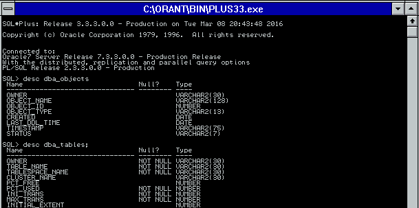

This morning during Gerald Venzl presentation of “What’s New for Developers in the Next Generation of Oracle Database” at Oracle Open World, one feature has been acclaimed by a full room: 12.2 show the end of identifiers limited to 30 characters.
We knew it would happen because in 12.1 all data dictionary views have 128 bytes length character strings:
Connected to: Oracle Database 12c Enterprise Edition Release 12.2.0.1.0 - 64bit Production SQL> desc dba_objects Name Null? Type ----------------------------------------- -------- ---------------------------- OWNER VARCHAR2(128) OBJECT_NAME VARCHAR2(128) SUBOBJECT_NAME VARCHAR2(128)but that’s only the dictionary metadata. Impossible to reach that limit:
SQL> create table "ThisIsAVeryLongNameThatIsAllowedInTwelveTwoC" as select * from dual;
create table "ThisIsAVeryLongNameThatIsAllowedInTwelveTwoC" as select * from dual
*
ERROR at line 1:
ORA-00972: identifier is too long
It is only annoying as the default column format do not fit in the screen:
SQL> select owner,object_name from dba_objects where object_type='TABLE'; OWNER ------------------------------------------------------------------------------------------------------------------------ OBJECT_NAME ------------------------------------------------------------------------------------------------------------------------
In 12.2 you can create longer identifiers:
SQL> create table "ThisIsAVeryLongNameThatIsAllowedInTwelveTwoC" as select * from dual; Table created. SQL> alter table "ThisIsAVeryLongNameThatIsAllowedInTwelveTwoC" add XXXXXXXXXXXXXXXXXXXXXXXXXXXXXXXXXXXXXXXXXXXXXXXXXXXXXXXXXXXXXXXXXXXXXXXXXXXXXXXXXXXXXXXXXXXXXXXXXXXXXXXXXXXXXXXXXXXXXXXXXXXXXXXX number; Table altered.But be careful, the limit is in bytes – not in characters. If we have multibytes characters, the limit can be reached earlier:
SQL> alter table "ThisIsAVeryLongNameThatIsAllowedInTwelveTwoC" add X€XXXXXXXXXXXXXXXXXXXXXXXXXXXXXXXXXXXXXXXXXXXXXXXXXXXXXXXXXXXXXXXXXXXXXXXXXXXXXXXXXXXXXXXXXXXXXXXXXXXXXXXXXXXXXXXXXXXXXXXXXXXXXX number; alter table "ThisIsAVeryLongNameThatIsAllowedInTwelveTwoC" add X€XXXXXXXXXXXXXXXXXXXXXXXXXXXXXXXXXXXXXXXXXXXXXXXXXXXXXXXXXXXXXXXXXXXXXXXXXXXXXXXXXXXXXXXXXXXXXXXXXXXXXXXXXXXXXXXXXXXXXXXXXXXXXX number * ERROR at line 1: ORA-00972: identifier is too long
The goal is not to abuse and put the longest names possible. But allowing more that 30 characters can be easier to match table names with Java class names for example.
I wanted to show that those 30 characters limits was very old, so I ran a 7.3.3 oracle version that lies on my laptop and displayed the same describe of DBA_OBJECTS:  Identifiers were 30 characters there. But look at object name: those 128 bytes are there for more than 20 years!
{kind=link}